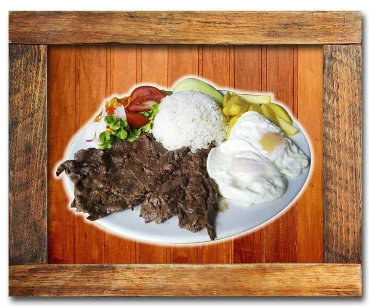

Yahuarlocro
12 de Julio de 2017

- 1 libra de menudo de borrego
- 1 litro de sangre de borrego
- 3 libras de papas peladas y picadas en dados
- 4 onzas de maní tostado y licuado con leche
- 2 ramas de cebolla blanca picada y culantro picado
- 1 cucharadita de orégano en hojitas
- 3 dientes de ajo molido
- 2 cucharadas de pimienta
- 2 cucharadas de aceite
Preparación:
Lave el menudo, voltéelo el revez, y si hay tripas vuélvalas al revez o ábralas. Ponga todo en un tazón sin agua, agregue y el jugo de la corteza de dos limones y hojas de hierba buena. Refriegue bien con las manos esto hace que salga lo amarillento. Deje un rato así y luego enjuague con abundante agua fría. Luego coloque en la olla de presión hasta que esté suave. Retire el menudo del caldo y píquelo bien pequeño. En una olla grande haga un refrito con aceite, cebolla blanca, culantro, orégano, comino, pimienta y ajo. Luego agregar la papa picada y fría con el refrito, añada el maní disuelto en leche, tapar y dejar hervir por 15 minutos, ahora agregar el caldo de menudo y deje cocinar bien las papas; para retirar agregar el menudo.
Carito: Excelente plato Ecuatoriano, deben probarlo sabe muy bien.
Roberto: Gracias por la receta intentaré hacerlo.
Churrasco
10 de Julio de 2017

Preparación:
Prepare el arroz al vapor. Corte los tomates en rodajas y sazónelos con sal y aceite. Pele los tomates y córtelos en tajadas. Fría los huevos; ponga en yema pizca de sal y pimienta. Sazone la lechuga picada con sal manténgala con agua. Corte las papas en plumas y fríalas hasta dorarlas. Corte la carne en pedazos anchos y muy delgados. Sazónela con el aliño. Fríala lentamente. Arregle el plato con una porción de arroz, las papas fritas y los maduros fritos. Arrime una porción de lechuga con el penino en rodajas los tomates y la cebolla sancochada, adornada con una tajada de aguacate. Arrime la carne montada con un huevo frito.

Andreix: Gracias por compartir la receta con nosotros.
Carito: Un Excelente plato ecuatoriano.
Roberto: Muy rico el churrasco sigan así a toda mi familia le gusta.
Andreix:Definitivamente un plato delicioso.